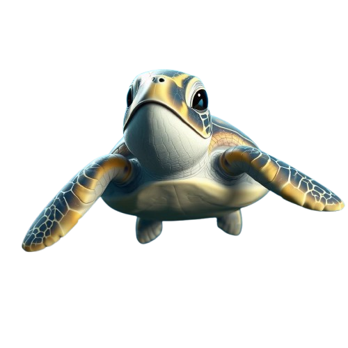
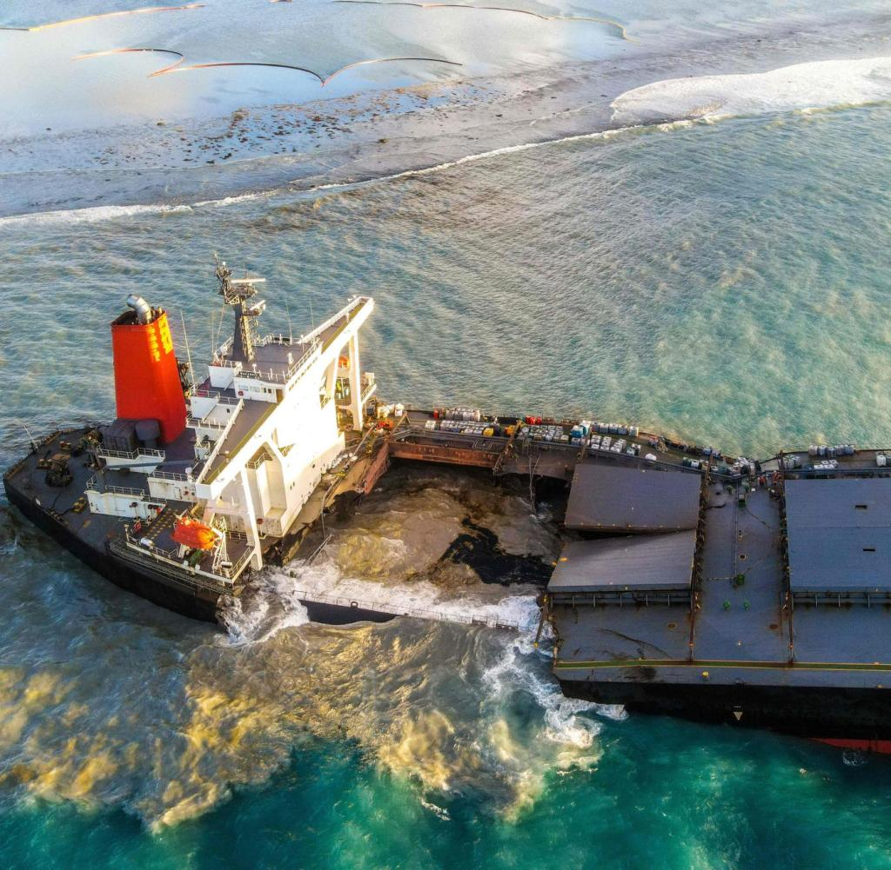
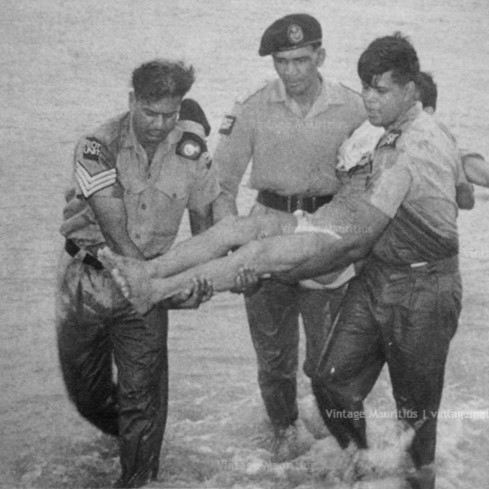

"A shipwreck is a term usually used to depict the remains of a ship that has been so completely destroyed or damaged that it cannot be used any more. This is usually caused by some sort of accidents like a ship running aground, colliding with rocks or icebergs, storms, or other devastating circumstances at sea. It can also refer to the event whereby a ship has sunk or is stranded. If a shipwreck is not salvaged for an extended time and is submerged in water, it often becomes a historic or archaeological site."
What may cause a shipwreck?

Bad Weather: Storms, hurricanes, or rough seas can overpower a ship, causing it to capsize, sink, or
run aground.
Navigational Errors: Miscalculations by the crew, faulty instruments, or poor maps can lead to a ship
colliding with rocks, reefs, or other obstacles.
Collisions: Ships may collide with other vessels, icebergs, or even underwater structures, leading to
significant damage.
Mechanical Failures: Engine malfunctions, hull breaches, or other technical problems can cause a ship
to become stranded or sink.
Human Error: Mistakes by the captain or crew, such as overloading, poor maintenance, or improper
handling, can contribute to a shipwreck.
2 Most Disastrous Shipwrecks around Mauritius
1) Wakashio (A $50 million
ship)
"The wreck of the Wakashio vessel which happened on the 25th of July, 2020 in the waters off the coast of Mauritius has been considered an ecological disaster ever since it took place. The bulker vessel owned by Nagashiki shipping ran onto the fringing reef close to the white sandy beaches of Mauritius triggering a disastrous oil leakage that posed threats to the fragile ecosystem of the region’s waters. At least about 1000 tons of oil were spilled into the clear bays and this caused extensive destruction of corals, sea animals, and the fisheries of the local people. It also provoked anger among many people and contributed to the calls for the improvement of the maritime laws and the protection of the environment in the whole region. In light of the consequences of the shipwreck, people have initiated several of the clean-up campaigns which aim at protecting the various species of the ecosystem situated in Mauritius and its seas."
Mystery of the vessel

Several mysteries related to the shipwreck of Wakashio have attracted the interest of maritime experts and the public in general.
alike. Among the greatest questions of all had to do with why the vessel wandered off its course through the most navigated
perilously close to the coral reefs of Mauritius. Investigations later showed that the vessel was operational with a
Reduced manpower, a situation the COVID-19 pandemic has further worsened, now raises questions whether the crew was able to keep proper watch and navigational procedures.
Adding to the mystery is the fact that it had been in contact with its shore-based management.
shortly before the grounding, prompting speculation about possible lapses in oversight or navigational
decisions. Additionally, it was reported that the vessel had a history of problems, both mechanical
failures, which raised questions about its maintenance and operational readiness before the accident."
How did this affect Mauritius? (Caused $9.4 million worth of damage)
Spill Size: Approximately 1,000 tons of very low sulphur fuel oil were released into the ocean.
Affected Area: The spill impacted around 125 km² of coastal waters and over 30 km of shoreline.
Ecosystem Damage: The oil contaminated sensitive marine ecosystems, including coral reefs and
mangroves,
which are crucial for biodiversity.
Wildlife: Local wildlife, including birds and marine species, faced severe threats due to oil
exposure,
leading to long-term ecological consequences.
2) SS Tayeb (Loss of Rs 25 Million)
"SS Tayeb was one of the earliest prominent cargo ships of the 20th century, basically used for merchant shipping. The ship went down in history when it tragically sank in 1972, which drew the attention of the world to maritime safety-related issues. The ship, at the time of its loss, had a very valuable cargo estimated to be worth about Rs 25 million. The incident shook not only the shipping industry but also the awareness of the risks involved in transporting high-value goods by sea. The story of SS Tayeb serves to remind us all of the risks faced by maritime operations and potential consequences of maritime disasters."
Rescue of the crew

"The rescue of the SS Tayeb - this was one of the critical maritime incidents that took place during very harsh weather conditions. The ship herself was in distress in very rough seas and eventually sank in the year 1972. Having received the message, local coast guards and maritime rescue teams immediately swung into action to locate and rescue crew members who had abandoned ship. Many crew members were saved from the rough seas and bad weather that complicated the operation. A testimony to the bravery and dedication of the rescue teams. Indeed, this incident not only highlighted the risks of sea travel but also brought to light an extremely important aspect: effective emergency response protocols in guaranteeing safety at sea. The event is always a fresh reminder that maritime safety measures need to constantly improve so as to avoid such disasters in the future."
Key facts regarding the vessel
Type of vessel: The SS Tayeb was a cargo ship primarily used for transporting goods.
Launch Year: It was launched in 1964, serving several years before its distress incident.
Ownership: The vessel was owned by a shipping company specializing in international maritime trade.
Legacy: The incident highlighted the importance of maritime safety and rescue preparedness in the shipping industry.